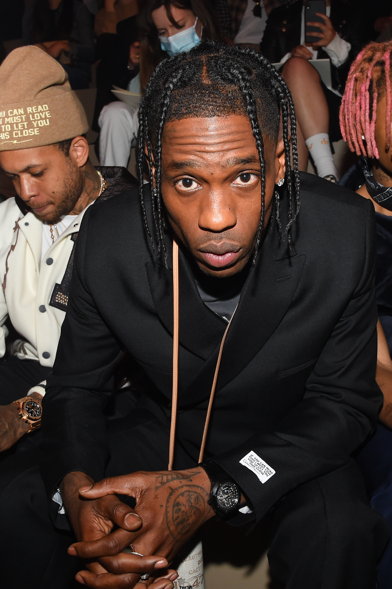

From Missouri City to the Global Stage

Born on April 30, 1991, in Houston, Texas, Jacques grew up in a middle-class suburb called Missouri City. When he was little, he lived with his grandmother, which he says kept him humble before he moved back in with his parents. After graduating from Elkins High School, he went to the University of Texas at San Antonio (UTSA). But college wasn't for him—he dropped out during his second year to chase his dream of making music, packing up and moving to New York and LA to catch his big break.
His stage name "Travis Scott" is actually a personal shoutout. "Travis" was named after his favorite uncle, and "Scott" comes from Kid Cudi, his biggest musical inspiration, whose real first name is Scott.
Outside of music, he was in a major relationship with Kylie Jenner from 2017 to 2023, and the two still raise their kids together. He also runs his own massive record label, Cactus Jack Records, where he signs and helps produce music for new artists.
How Travis Scott Changed Modern Hip-Hop
Travis shook up the music industry by taking heavy, loud 808 bass lines and mixing them with creepy, spacey synthesizer sounds. It creates this eerie, massive vibe that makes his songs feel like you are listening to a sci-fi movie soundtrack instead of a regular radio rap track.
Instead of using auto-tune just to fix bad singing, Travis uses it to turn his voice into a completely different instrument. By layering pitch correction with lots of echoes, delays, and reverbs, his vocals blend straight into the background music like a keyboard or guitar line.
Travis popularized the crazy mid-song "beat switch" that everyone uses in modern rap now. By completely changing the speed, instruments, and vibe right in the middle of a track, his songs feel like a two-part movie with a real storyline instead of just playing the same loop over and over.
During the 2020 lockdowns, Travis teamed up with Epic Games to throw a massive virtual concert inside Fortnite. This totally changed the game for the music business, proving that virtual concerts could actually work and opening the door for massive digital events in the future.
Travis has taken over the business world, creating incredibly popular sneaker lines with Nike and becoming the very first artist since Michael Jordan in 1992 to get an official meal named after them on the McDonald's menu.
Click a Track to Check Out the Song Details
Our Group's Take on Travis Scott
In our opinion, Travis Scott's sound is unique because he doesn't just rap; he designs music. We think his best skill is taking different sounds, voice effects, and beats and layering them together like a movie director. Even if you aren't a big fan of rap music, you have to respect how he changed the business of music by merging gaming, fashion, and food into one giant culture. We chose him because his concerts are legendary for their energy, and his music shows how trap music can be creative and experimental instead of just repetitive.
Where We Found Our Research Data
Used to check facts on his childhood in Houston, dropping out of college, and setting up Cactus Jack Records.
Used to grab the official player counts and concurrent viewer numbers during his virtual live stream event.
Used to verify the history of his fast food meal deal and his sneaker partnership releases.
Used to check out comments from music critics regarding his beat changes, sound mixing, and synth work.